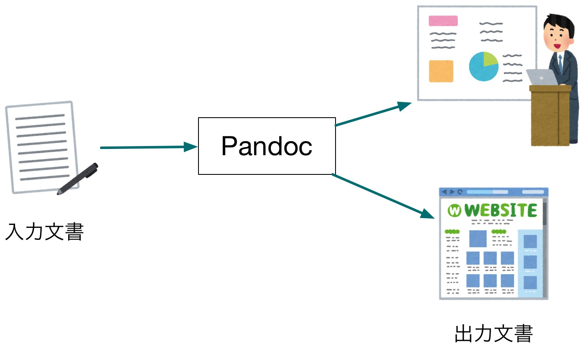
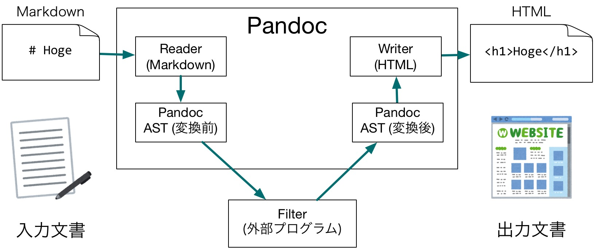

Pandoc Night 2019 へようこそ！
藤原 惟 (@sky_y)
2019年5月20日
Pandoc Night 2019 へようこそ！
- 18:30 開場
- 19:00 開始予定
タイムスケジュール
| 時刻（目安） | 内容・LTタイトル | 発表者 |
|---|---|---|
| 18:30 | 開場 | |
| 19:00 | 開始・概要説明（＋会場提供の紹介） | 藤原惟 |
| 19:15 | LT枠1 「私のPandoc遍歴」 | @setoazusa |
| 19:30 | LT枠2 「RMarkdownからWordを生成する闇の技術プラスアルファな感じ（未定）」 | @niszet0 |
| 20:00 | 休憩（歓談タイム） |
タイムスケジュール
| 時刻（目安） | 内容・LTタイトル | 発表者 |
|---|---|---|
| 20:15 | LT枠3 「私的Markdown−PDF変換環境を紹介するLT」 | @_K4ZUKI_ |
| 20:30 | LT枠4 【藤原がLT or 飛び入り歓迎】 | |
| 20:45 | クロージング | 藤原惟 |
| 21:00 | 一旦終了（以後、歓談タイム） | |
| 22:00 | 撤収（目安） |
注意事項
- 飲食可能（ビアバッシュします！）
- お片付けなど、ご協力いただければ幸いです！
- 営業・採用活動に関する勧誘などの行為はお断りします
Pandocとは？
- a universal document converter
- 万能文書変換器
- 文書変換ツール
- ある文書（ドキュメント）を入力フォーマット A から 出力フォーマット B に変換する
- コンテンツ（内容）とメタデータは可能な限り残す
- スタイルはバッサリ捨てて、フォーマット B に合わせる


公式トップページ：例の図

トップページ：対応フォーマット一覧（最近できた）

対応フォーマット：軽量／マークアップ言語
↔ Markdown (including CommonMark and GitHub-flavored Markdown)
↔ reStructuredText
→ AsciiDoc
↔ Emacs Org-Mode
→ Textile
↔ MediaWiki markup対応フォーマット：HTML/XML系
↔ (X)HTML 4
↔ HTML5
↔ DocBook version 4 or 5
↔ OPML
→ OpenDocument XML対応フォーマット：ワープロ・組版・電書系
↔ Microsoft Word docx
↔ OpenOffice/LibreOffice ODT
↔ LaTeX
→ InDesign ICML
↔ EPUB version 2 or 3対応フォーマット：プレゼンスライド
→ LaTeX Beamer
→ reveal.js対応フォーマット：新しいもの（要注目！）
→ Microsoft PowerPoint
↔ Jupyter notebook (ipynb)Pandocは「銀の弾丸」か・・・？
Enjoy Pandoc!
- わからないことは質問してください！
Pandocユーザ会について
Pandocユーザ会とは
- 今のところ任意団体のユーザ会です
- 目的
- Pandocに関する情報共有・ヘルプ
- Pandocが対応する各種文書フォーマットを知り、そのユーザと交流する
- ユーザ層はかなり多様です
- LaTeX、Word、Sphinx、LibreOffice、Rなどなど
- ITエンジニアだけでなく、編集者や非IT系エンジニア（電機系？）も
Pandocユーザ会の活動拠点
- メーリングリスト
- たまに更新、今後も使います
- Slack
- アクティブですが、きちんと宣伝してませんでした 🙇
- 参加希望の方は藤原まで話しかけてください！
- Webサイト
- 長らく放置して申し訳ありません 🙇
- ユーザーズガイド日本語版と同時にリニューアル（ベータ版で公開予定）
Pandocユーザ会Slackにぜひ！

Pandocユーザーズガイド 日本語訳の改訂作業
日本語訳 前のバージョン：1.12.4.2（超古い）
日本語訳 改訂版：2.7+に対応予定
- https://pandoc-doc-ja.readthedocs.io/ja/latest/users-guide.html
- robots.txtで検索避け中（まもなく公開予定）

翻訳者・レビュワー募集中！
- Slack または 藤原にお声がけください

Pandocの深層へようこそ・・・
Pandocが扱える文書表現
- 実は「文書」の内部表現がPandocに存在する
- jgm/pandoc-types: Definition.hsで定義されている
- Haskell:
data Pandoc = Pandoc Meta [Block]Pandocというデータ型があるMeta: メタデータ[Block]: ブロック（<div>や<p>などに相当）のリスト- ブロックの種類によっては、インライン
Inlineを含むこともできる
- ブロックの種類によっては、インライン
- この制約が実はキツイ！
Pandocをユーザが拡張する方法
- フィルタ：自分でコードを書いてカスタマイズできる
- テンプレート：コンテンツを流し込んで出力ファイルを得る元のテンプレート
- Reference Doc
フィルタ
- 自分でコードを書いてカスタマイズできる
- オプション:
-For--filter - JSONフィルタ：任意のプログラミング言語で書かれた実行可能ファイル
- Luaフィルタ：Pandocバイナリが持っているLua処理系を用いたフィルタ
- ⭕ 早い、外部プログラムに依存しない
- ❌ Luaの学習コスト、デバッグにコツが必要

テンプレート
- コンテンツを流し込んで出力ファイルを得る元のテンプレート
- オプション:
--template - 迷ったら
pandoc -D フォーマット名でテンプレートを直接読もう！ - Pandocのデフォルトテンプレート (pandoc-templates) をForkし拡張するのがおすすめ
- バージョンごとにアグレッシブに変わるため
補足：メタデータとテンプレート変数
| メタデータ | テンプレート変数 | |
|---|---|---|
| 出力ファイルのメタデータとして出力 | ⭕ | ❌ |
| テンプレートに変数埋め込み | ⭕ | ⭕ |
| オプション | -M key=val |
-V key=val |
| YAMLメタデータブロック | ⭕ | ❌ |
Reference Doc
- Wordなどテキストで表現しにくい文書について、具体的なファイル (docxなど) をテンプレートの代わりにする
--refernce-doc(注意：以前は--refence-docxだった！)
- Haskellを書いて jgm/pandoc に直接コントリビュートする！
カスタムWriter
- 出力ファイルを担当するモジュール（Writer）をユーザがLuaで書ける
- 基本のLuaソースがあるので、これを流用して書いてもいい